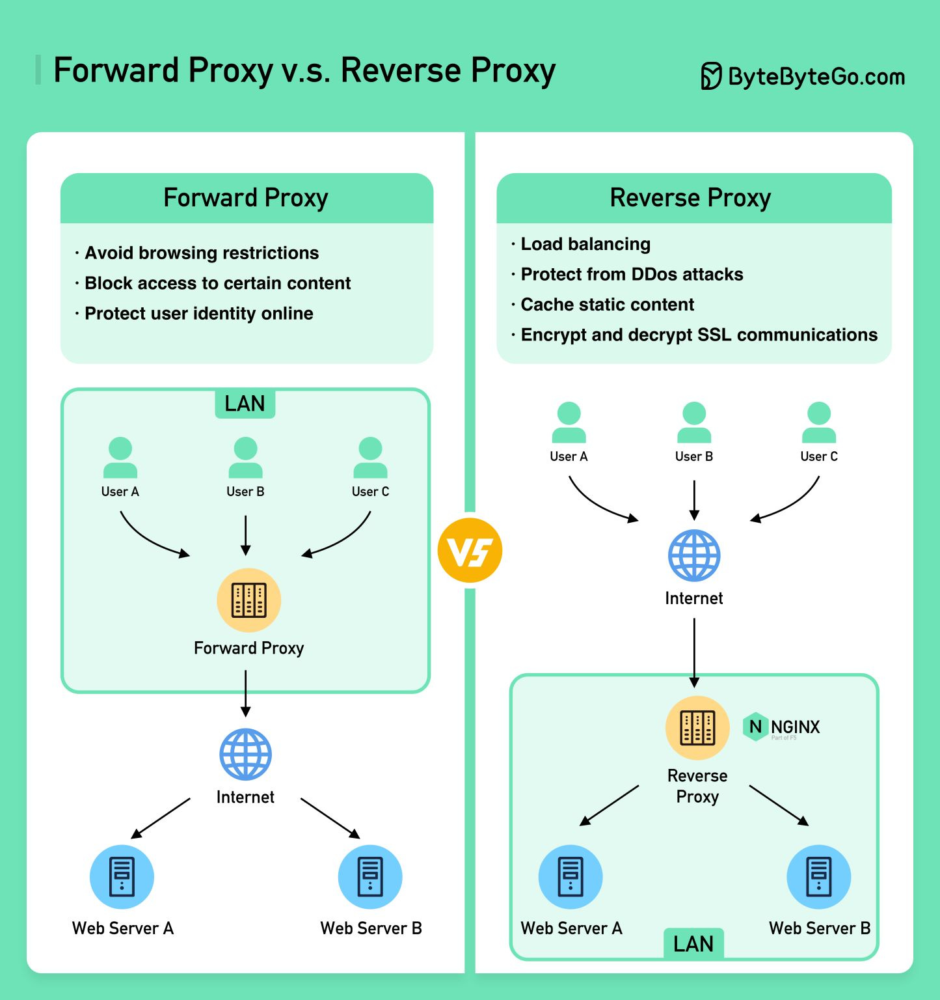

Proxy Overview for Software Architects¶
1. What is a Proxy?¶
A Proxy is an intermediary server that separates end users from the websites they browse. Depending on its configuration, it can act as a Forward Proxy or a Reverse Proxy, each serving distinct functions in network architecture.
- 🛡️ Proxy Server: Acts as an intermediary between client and server, handling requests and providing anonymity by masking the client’s IP address.
2. Proxy Server Types (Direction-Based)¶
2.1 Forward Proxy (Client-Side Proxy)¶
- Definition: A forward proxy sits between user devices and the internet, acting on behalf of the client by masking the client's IP address and managing their requests to external servers.
- Function:
- The client sends a request to the forward proxy.
- The proxy forwards this request to the external server on behalf of the client.
- The server responds to the proxy, which then passes the data back to the client.
Forward Proxy Common Use Cases:¶
- Protect Clients: Helps in anonymizing the client's IP and providing security from external threats.
- Avoid Browsing Restrictions: Forward proxies allow users to bypass geographic or local restrictions to access blocked websites.
- Block Access to Certain Content: Used by organizations or institutions to restrict user access to certain websites.
Advantages of Forward Proxy:¶
- Anonymity: Clients can access resources without exposing their real IP addresses.
- Group Requests: A single proxy can serve multiple clients, streamlining traffic to external servers.
- Access Control: Can bypass geo-restrictions or firewall policies to access restricted content.
- Security: Provides an additional layer of security by checking requests against predefined rules.
- Caching: Forward proxies can cache frequently requested content, reducing load on the server.
- Logging: Monitors and logs user requests for security or compliance purposes.
Disadvantages of Forward Proxy:¶
- Application Layer Limitation: Works only at the application layer, meaning each application needs to be configured separately to use the proxy.
Example of Forward Proxy:¶
- Corporate Network: Employees within a corporate network can access restricted websites via a forward proxy to anonymize their requests and bypass content restrictions.
2.2 Reverse Proxy (Server-Side Proxy)¶
- Definition: A reverse proxy accepts client requests, forwards them to the appropriate backend web servers, and returns the responses to the client, making it appear as though the proxy itself processed the request.
- Function:
- Clients interact with the reverse proxy rather than the backend servers directly.
- The reverse proxy forwards the client requests to the appropriate backend server based on load balancing or routing rules.
Reverse Proxy Common Use Cases:¶
- Protect Servers: By hiding the identity and IP addresses of backend servers, reverse proxies prevent direct client access, securing the servers.
- Load Balancing: Distributes client requests across multiple servers, ensuring no single server is overwhelmed.
- Cache Static Content: Reduces load on backend servers by caching responses to frequently requested data.
- SSL Encryption/Decryption: Reverse proxies can handle the encryption and decryption of SSL traffic, offloading these resource-intensive tasks from backend servers.
Advantages of Reverse Proxy:¶
- Enhanced Security: Masks the identity of backend servers, preventing direct access and protecting against attacks like DDoS.
- Load Balancing: Distributes client requests across multiple servers, ensuring no single server is overwhelmed.
- Caching: Reduces load on backend servers by caching responses to frequently requested data.
- Global Content Delivery (CDN): Reverse proxies, especially in CDNs, cache content closer to users geographically, reducing latency and improving access speed worldwide.
- SSL Handling: Manages SSL communications by encrypting and decrypting traffic.
Example of Reverse Proxy:¶
- Content Delivery Networks (CDNs): Companies like Cloudflare use reverse proxies to cache content closer to users, improving performance and reducing server load.
Key Difference:¶
- Forward Proxy: Protects the client and manages outbound traffic.
- Reverse Proxy: Protects the server and manages inbound traffic.

3. Proxy vs. VPN¶
| Feature | Proxy | VPN |
|---|---|---|
| Encryption | No encryption | Creates an encrypted tunnel for all traffic |
| Function | Hides client IP for specific applications | Hides IP and encrypts all traffic on the network |
| Performance | Faster, but only works at the application layer | Slower due to encryption, but more secure |
| Use Case | Accessing geo-restricted websites | Secure remote work, full internet privacy |
- 🌐 VPN: Unlike proxies, VPNs create an encrypted tunnel, providing privacy and security by encrypting all data, making them more suitable for sensitive information transmission.
Example:¶
A VPN is commonly used by remote employees to securely connect to a corporate network, ensuring that their connection is encrypted. A proxy, on the other hand, might be used by users to access blocked content in a specific region.
4. Reverse Proxy vs. Load Balancer¶
| Feature | Reverse Proxy | Load Balancer |
|---|---|---|
| Function | Intercepts client requests, forwards to servers | Distributes traffic across multiple servers |
| Security | Provides security features, e.g., masking server IPs | Primarily for performance and load management |
| Load Balancing | Can act as a load balancer | Core functionality |
| Use Case | Security and load balancing in one | Focused on distributing traffic efficiently |
- ⚖️ Load Balancer: Distributes traffic across multiple servers, enhancing performance and reliability, but lacks the additional security functions of a reverse proxy.
Example:¶
In AWS, a reverse proxy (like Nginx) can be configured to act as both a reverse proxy and a load balancer, whereas a dedicated Elastic Load Balancer (ELB) handles purely load balancing tasks.
5. Proxy vs. Firewall¶
| Feature | Proxy | Firewall |
|---|---|---|
| Purpose | Manages traffic to/from a client or server | Protects a network by controlling incoming/outgoing traffic based on rules |
| Security | Hides IP addresses, provides anonymity | Blocks or permits data based on packet-level rules |
| Functionality | Acts at the application layer (L7) | Works at network layers (L3-L4), inspects packets |
- 🔒 Firewall: Scrutinizes data packets, enforcing security rules to protect networks by controlling what data is allowed in or out.
Example:¶
In a corporate network, firewalls ensure that only trusted traffic is allowed to pass, while a forward proxy is used to anonymize the outgoing web traffic of internal users.
6. Real-World Applications of Proxies¶
- Forward Proxy in Education: Universities often use forward proxies to limit access to certain websites, while allowing students to access external academic resources anonymously.
- Reverse Proxy for Web Applications: Netflix uses a reverse proxy setup to distribute content across its servers globally, ensuring availability and security.
- Proxy for DDoS Protection: Cloudflare uses reverse proxies to hide real server IPs, protecting them from Distributed Denial of Service (DDoS) attacks.
- Global Content Delivery (CDN): CDNs like Akamai act as reverse proxies, caching web content closer to users to reduce latency and improve access speeds.